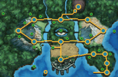

A região de Unova é o cenário principal dos jogos Pokémon Black e White e seus remakes Black 2 e White 2, inspirada em Nova York e regiões metropolitanas dos EUA. Unova combina cidades modernas, áreas industriais, florestas, desertos e pontes, oferecendo um mundo urbano e diversificado para os jogadores explorarem. O jogador começa sua jornada em Nuvema Town, recebendo seu primeiro Pokémon do Professor Juniper — Snivy, Tepig ou Oshawott — definindo a estratégia inicial para os ginásios e batalhas. Nuvema Town também introduz elementos narrativos mais complexos, incluindo rivalidades e a história da Team Plasma. Unova possui cidades e ginásios icônicos, como Striaton City, com o líder do ginásio responsável por Pokémon do tipo Normal, Nacrene City, especializada em Pokémon do tipo Fantasma, e Castelia City, a grande metrópole repleta de desafios e comércio. Cada cidade oferece uma combinação de batalhas, exploração e narrativa.
